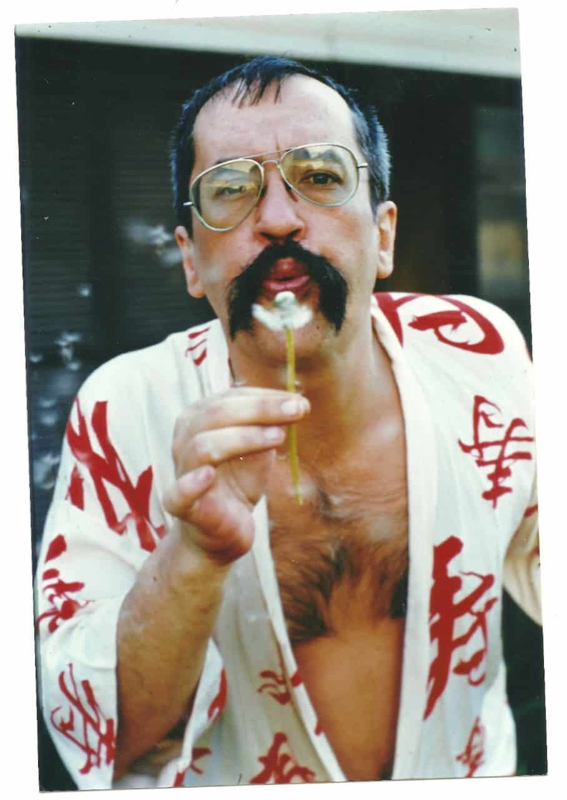

Um pouco a história de Paulo Leminski
Paulo Leminski (1944–1989) foi um dos poetas, escritores, tradutores, ensaístas e compositores mais marcantes da literatura brasileira do século XX. Homem de talentos múltiplos — lecionou, atuou no mercado publicitário, praticou judô e transitou com facilidade entre a cultura erudita e a popular —, Leminski ficou nacionalmente conhecido por seu estilo conciso, bem-humorado, ágil e altamente experimental. Nascido em Curitiba, Leminski renovou a forma de se fazer poesia no Brasil. Sua obra integra a rigorosa geometria do Concretismo com a espontaneidade e a atitude da Poesia Marginal (Geração Mimeógrafo), somadas à precisão métrica do haicai japonês e à sonoridade da música popular e do rock. Entre suas obras de maior impacto destacam-se a prosa experimental Catatau (1975) e a coletânea Caprichos & Relaxos (1983).

Paulo Leminski desempenhou um papel divisor de águas no imaginário e na identidade cultural do Paraná:
Descentralização Cultural: Provou que era possível produzir uma obra vanguardista, universal e de apelo nacional sem sair de Curitiba, quebrando a hegemonia do eixo Rio-São Paulo. Desconstrução do Estereótipo Conservador: O Paraná era visto com frequência como uma região culturalmente tradicional. A figura de Leminski — o "polaco-mulato", de visual marcante, postura libertária e linguagem provocativa — deu à cultura paranaense um rosto moderno, urbano e ousado. Símbolo da Curitiba Contemporânea: Leminski tornou-se um ícone da cidade. Sua presença deu origem a um ecossistema poético que até hoje inspira novas gerações de escritores, músicos e artistas plásticos no estado.
A relevância de Paulo Leminski para a cultura brasileira reside em sua capacidade de democratizar a poesia sem perder a densidade conceitual.
Linguagem Acessível e Inovadora: Aproximou o texto poético do cotidiano, utilizando recursos da publicidade, do bordão e dos trocadilhos. Abertura para o Haicai: Foi um dos grandes responsáveis por popularizar a forma poética do haicai no Brasil. Multidisciplinaridade: Transitou entre a música, a literatura infantil, a tradução de grandes nomes da literatura mundial (como James Joyce e Samuel Beckett) e biografias de personalidades icônicas (como Bashô, Jesus, Trótski e Cruz e Sousa).

Curiosidades
Curiosidade 1
Paulo Leminski foi um importante poeta e escritor brasileiro, nascido em Curitiba, no Paraná, em 1944. Sua obra ficou conhecida pela linguagem criativa, pelo humor e pela mistura de diferentes estilos e referências culturais. Além de escritor, Leminski era apaixonado por judô. Ele praticou o esporte durante muitos anos e chegou a conquistar a faixa-preta.
Curiosidade 2
Quando era adolescente, Leminski estudou no Mosteiro de São Bento, em São Paulo. Lá, estudou disciplinas como latim, grego, filosofia e teologia, chegando a considerar seguir a vida religiosa. Essas experiências diferentes ajudaram a formar a personalidade e o estilo único de Paulo Leminski, que se tornou uma das figuras mais marcantes da literatura brasileira.